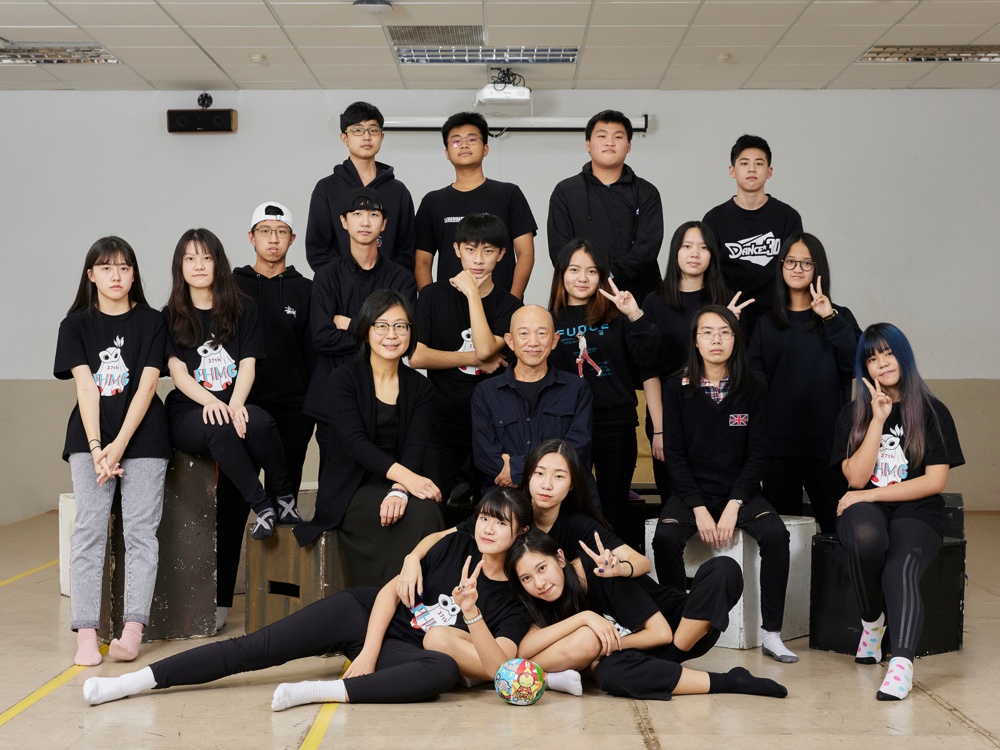
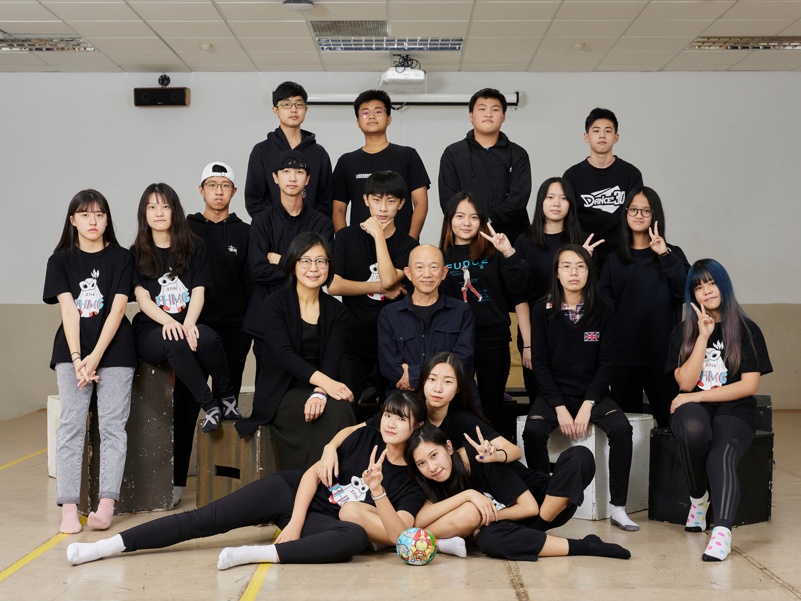

01/14校園演出活動
2050的世界
- 我是天行者，我沒有什麼朋友，在現實世界和虚擬世界都是，
我對世界有太多的疑問，但其他的人根本不在乎，我總是獨自一人
- 你們知道嗎？2050年的我們連空氣都要花錢買
- 我有一個心願，那就是回到2020年，在真實世界裡用自己的雙手翻翻書，
坐在沒有水泥高牆的海邊，靜靜地聽著海的聲音


環境變遷的紀錄者
柯⾦源導演
柯⾦源，環境⽣態紀錄片導演，⼈稱柯師傅，30年來持續在紀錄觀察台灣。
扛著相機、攝影機上⼭下海，為了完成拍攝任務，在地⽣活、海底潛⽔都難不倒他。
柯師傅把台灣當成⾃家⽥地⼀般，不停地巡⽥⽔，每隔⼀段時間就回到同⼀地點看⼀下，
以時間軸來紀錄環境變化，故鄉彰化伸港農地旁的灌溉⽔圳，他⼀拍40年，
他說，⽔圳的變化就是台灣農地受汙染的縮影。
環境⽣態紀錄片作品累積近30幾部，內容包⼭包海，⾜跡遍布南北極。
他也拿過四座⾦鐘獎、以及卓越新聞獎-新聞志業特殊貢獻獎、TIDF台灣國際紀錄片影展-傑出貢獻獎、⾦鼎獎、國家⽂藝獎等，
就算獲獎無數，柯師傅依舊像個苦⾏僧，默默持續在紀錄，守護我們的島。


獻給同學們的一封信
「致青春」
寫這一封信，是想跟各位分享，清楚自己的興趣、能力，做好準備之後，專心加上堅定的毅力，夢想是可能成真的。最後，共勉之；「不是看到機會才努力，而是持續努力了，就會有機會。」。這是我的人生格言之一喔！
太屌了！我們即將完成一齣精彩的即興創作。其實，我跟大家一樣，在青少年時期，有許多的夢想，或者說是幻想吧！但這一次攜手合作的演出，並不曾出現在我的想像中，所以，我格外珍惜，因這是我們未來共同美好的回憶！
每個人的青春期各有不同的經歷，但或多或少的會有些相似之處。譬如，我不喜歡為了應付考試而讀書，也只想要做自己喜歡的事、看自己喜歡的書、可以自己安排生活、決定自己的興趣，包括與喜愛的朋友往來，追求自己所愛？如果與同學相處出現緊張關係，或與父母親的意見相左的時候，就會很煩躁，也渴望擁有愛情的親密關係，但總難掩失落感！對於未來也有著莫名的恐懼、或茫然。這些情緒與情境，我都真實的經歷過，我想，你們目前可能也正艱難地面對著！
既然，人生總不會完全如意，那就面對它、適應它，仰著頭、接受它的挑戰，讓自己擁有勇氣、匯聚強大能量，才不枉費少年時吧！我曾經在無數的早晨於上學途中徘徊，在難以計數的深夜裡徬徨，也不斷的思索著，自己的人生該如何定義、形塑呢？高二的某一天，我想通了一個事實，完全的自主性與自由度，相對的是承擔與責任，這也是從青少年，轉骨為青年的必備條件與本事。
因此，我開始學著在做出任何決定之前，會先認真確實的思考利弊得失，也反覆自問該如何培養興趣，以及如何具備獨立的能力，這都需要學習。而專心、意志堅定，是壯大自己、培養勇氣不可或缺的心理素質。我在高中畢業的時候，就立下目標，也取得家人的理解；「我已想清楚了未來的生涯規劃，也準備接受各種可能的挑戰，自己將朝著標竿前進，有能力獨自踏上夢想實踐的旅途！」。
從1980年以來，我在視覺藝術、媒體領域沈浸了四十年，當然也歷經許多艱難、困苦，但我沒有退縮，或者灰心喪志，而是加倍努力、直面挑戰，因為這是我的夢想、理想，更是我的志業。因此，我登上了南極洲、非洲最高峰，深入三大洋的內太空，也達到藝術創作的新境界。這些令人稱羨的紀錄，其實，並不是我夢想中的清單，而是我做好了準備，機會就越來越近。寫這一封信，是想跟各位分享，清楚自己的興趣、能力，做好準備之後，專心加上堅定的毅力，夢想是可能成真的。最後，共勉之；「不是看到機會才努力，而是持續努力了，就會有機會。」。這是我的人生格言之一喔！


「很榮幸！並肩同行」
多麼震憾而驚艷，當資傳社同學提供他們對於網站、主視覺與影片製作的設計規劃；多麼動容與發人深省，當在排練場看見話劇社同學透過即興片段，緩緩說出自己的心聲；每一刻我的內心總是激動不已，常常勉勵自己要與同學們手牽手一起並肩同行。
感謝復興高中話劇社、資傳社所有參與其中的同學與指導老師陳晉老師、林宏修組長，讓劇團有機會與您們一起探索、一起創造、一起成長。
MORE...
「很榮幸！並肩同行」
多麼震憾而驚艷，當資傳社同學提供他們對於網站、主視覺與影片製作的設計規劃；多麼動容與發人深省，當在排練場看見話劇社同學透過即興片段，緩緩說出自己的心聲；每一刻我的內心總是激動不已，常常勉勵自己要與同學們手牽手一起並肩同行。
感謝復興高中話劇社、資傳社所有參與其中的同學與指導老師陳晉老師、林宏修組長，以及，復興高中劉桂光校長給予團隊信任與指導，並在法鼓山人文社會基金會的共同成就下，讓劇團有機會與您們一起探索、一起創造、一起成長。
我常常提醒自己，作為藝術教育者要意識到，我們自己設計的課程常常危及學生的思想，學生為了保護自己，通常閉口不談自己最真實的想法，然而學生如何悄悄的把一些想法透過集體即興創作過程中，將其想望埋在呈現片段、行動與話語裡，確實是值得藝術教育者不能視而不見的覺察與省思。
「將學習權回到學習者本身，從學習者自身情感與生活世界為起點」一直是策劃、執行「與高中生有約」專案重要的核心理念。這學期，最後一場演出活動「如何在探索中揮灑自己的力量」即將登場，劇團很榮幸邀請到長年耕耘、守護環境的柯金源導演，期盼透過柯導演此生如何在逆境中自我實踐的生命故事，有機會為正在探索人生的高中生帶來啟發與影響。從2021年9月份開始至今，劇團與柯導演、同學們一起摸索、冒險的旅程，真是既不容易也非常的珍貴。這場同學與藝術家互相合作的過程，也使同學與藝術家之間互為主體，共享作者權，展現了更開放、更民主的創作理想得以實踐。 再次感謝話劇社、資傳社同學，讓劇團有機會在你們高中這個階段參與你們如此燦爛奪目的生命之旅。
祈願
這趟「並肩同行」的旅程，能啟發同學積極關心具有公共性議題的熱情，並擁有獨立思考、自主探索、相互合作與解決問題的能力。祝福所有復興高中的同學，更有勇氣面對挑戰，且超越自我的局限、擁抱未知，迎向屬於自己的美好人生。
蔡旻霓導演

「我們的島」柯金源
生命繼起的能量，來自海洋的自然運行，
祂提供萬物繁衍孕育的養分、蛻變的溫床!
山林蘊含水土、庇護生靈，
生命延續的泉源，文化傳承的依賴。
不同物種，在同一時空相會，
感受彼此的善意、信任，
合奏生命的樂章，代代傳唱亙古的故事
MORE...
「教育的美好」＿專訪
復興⾼中劉桂光校長
法⿎山⼈⽂社會基⾦會鍾明秋秘書長
MORE...
「創作中，
我們遇見彼此」
每個人都有權利去創造，
使自己人生富有意義，
留下自己的足跡。
MORE...
台灣是一座年輕的島嶼，大約六百萬年前逐漸形塑，約在250萬年前成形，目前仍然變動中。近一百多萬年來，超過20幾萬種生物，陸續登上這座島嶼尋找生存繁衍子代的機會 ，目前站在海邊，依然可以看到生命遷徙的奇蹟。
像這一顆顆海漂的種子，它可能在海上已漂流了很久很久，當它被海浪沖上海岸之後，就開始尋找立足生根的機會，我相信它有一天，會成為一片森林，就像目前恆春海岸林的樣子。
那我，與我的祖先，或者島上不同族群的住民，也是在幾千年前，或者最近三、四百年來，從不同的地方，像是海漂的種子，借助海洋的洋流輸送，來到這座島嶼開枝散葉，一代傳承一代，甚至有些物種或者住民，會再跨出大海，往下一座島嶼遷徙，這座島嶼可能是他們生命中的中途島，當他們在這裡吸取足夠的養分與能量之後，就從這座島嶼往海洋世界出發，台灣是一座豐饒多樣，孕育生命的島嶼，也是萬物的中途島、避難之地，更是世界的中心。
我的生命核心價值，在於擔負環境資訊的傳遞、促進大眾的了解與溝通，當大家對於事件的本質了解以後，就可能在意他的改變，進而付諸行動，最後讓所有生命都有了期待與希望，這就是我一生的價值所在。我們不是看到希望才努力，而是努力的就會有希望。我相信，每一個人都可以用他熟悉的方法保護這片土地，為這座島嶼盡一份心力，那我們的環境就有可能持續美麗。
生命繼起的能量，來自海洋的自然運行，
祂提供萬物繁衍孕育的養分、蛻變的溫床!
山林蘊含水土、庇護生靈，
生命延續的泉源，文化傳承的依賴。
不同物種，在同一時空相會，
感受彼此的善意、信任，合奏生命的樂章，代代傳唱亙古的故事
劉桂光校長：
永續發展是近年來⼤家非常關⼼的議題，聯合國於2015年甚至提出了17個永續經營發展的⽬標(SDGs)，希望號召全球公民進⾏全⾯性的改變世界的⾏動。復興高中許多的師長也在這些議題上努力教導學生，從生命教育的角度關心自己、他人、乃至於生活的環境。
鍾明秋秘書長：
早在1992年，聖嚴法師便已提出「⼼靈環保」︔「以健康、快樂、平安的身⼼，照顧⾃⼰、照顧社會、照顧⼤⾃然，使得我、你、他⼈，都能健康、快樂、平安地⽣活在同⼀個環境之中，便是現代⼈的⼼靈環保。」
⼈基會成⽴至今，以⼼靈環保為核⼼理念，透過⼼六倫的具體實踐，數年來積極推動關懷⽣命的多元服務，藉以淨化⼈⼼、淨化社會，為永續發展共同努⼒。
劉桂光校長：
這次活動，復興⾼中與法⿎山⼈⽂社會基⾦會，在⼈劇團蔡旻霓導演邀請下進⼀步與公共電視「我們的島」柯⾦源導演合作，透過課程與紀錄⽚的分享、⽥野調查、戲劇演出……，帶領學⽣對環境的議題進⾏深度的探索與思考，讓學⽣感受到⾃然復育的⼒量，並由此延伸到探索⾃我、重視性平教育、反霸凌、減少不公平……等世界上⼤家關⼼的重⼤議題。
鍾明秋秘書長：
⽣命視野的養成，從⼩開始︔家庭教養、學校教育，都是孩⼦⼀⽣中，最重要的根基。透過⼈基會與⼈劇團共同合作進駐校園，長時間以傾聽、⽀持、引導、創作等⽅式， 陪伴探索成長中的學⽣，期待我們的陪伴，得以引導學⽣⾃我肯定的⼒量茁壯屬於⾃⼰的⽣命。
劉桂光校長：
感謝公共電視的柯⾦源導演、法⿎山⼈基會鍾明秋秘書長、⼼六倫宣講團林知美團長、蔡旻霓導演的帶領與⽀持，也感謝復興⾼中同學們的參與學習。當我們的教育從教室⾛向環境與社會，當我們的學習開始從教科書⾛向世界，當我們的學⽣從⾃⼰的⽣活⾛入⼈群與⾃然，當我們的價值從物質欲望⾛向精神⽣命，我想這就是真正的教育了。
鍾明秋秘書長：
感謝劉桂光校長，若不是您這⼀年多來的經驗指導與穿針引線，相信團隊也沒有因緣進駐校園，並在實踐過程中，逐步找到與⾼中⽣連結的基礎。
劉桂光校長：
再次地感謝⼤家對復興⾼中孩⼦們的關照，特別是公共電視的柯⾦源導演、法⿎山⼈基會鍾明秋秘書長、⼼六倫宣講團林知美團長、人劇團蔡旻霓導演，我們何其有幸，在真正的教育環境中學習， 共同讓教育更加美好！
「被情續勒索」、「被排擠」、「考試成績差/被當/讀書不會讀/課業」、「早上起不來」、「外表/不會穿搭/覺得自己好醜」、「愛情/桃花/感情/沒男友」、「未來的出路」、「沒錢」、「不會打公關/不想社交/人際/友情/社團」、「時間不夠用」、「家人」、「太在意人家眼光」、「太喜歡拖延」、「睡不飽、吃不飽」、「不能當草履蟲」、「我想回外婆家」、「我覺得我不夠上進，但我很懶又怕被當」、「為了不被看不起」、「為了身旁人的期待」（復興高中，2021）
我們與同學的心靈相遇；從分享、對話與書寫開始。在無數排練場的相處生活裡，一起透過集體即興創作過程思索同學們自己所書寫，那關於此刻自己最在意的事情，雖然只是一些關鍵字。我們透過對彼此的信任與分享內心情感，一起在創作過程中勇敢面對內在世界的糾結與茫然。
過程中，同學擁有創作的主導權，並能以任何形式呈現，這同時也是同學保存提升自我的方式。劇團以情感引導理性思維的行動教育，透過以「環境」議題引導學習；然而，如何觸發同學由被動轉為主動的行為，確實需要縝密的課程設計。我們從11月開始，透過三堂課啟動這趟遇見彼此的旅程，包含第一堂「心中的淡水、八里」：邀請同學透過繪畫方式相互交流，分享自己心中的淡水與八里；第二堂「與紀錄片柯金源導演有約」：邀請柯導演直接面對面與同學交流，針對多年田野探勘的觀察與體驗進行分享，使同學前往田野觀察前有了很完整的認識；第三堂「田調觀察」：在柯導演帶領下，直接前往八里田野踏查。藉由參與、體驗、對話讓同學對大家共同所處的世界建立起一種強烈的覺知和相互關聯的過程，接下來進入排練場域集體即興創作，引導同學從自身生命經驗出發，從身體感官、自我覺知的成長學習歷程 ，把戲劇或劇場作為一種理解生活與自我成長的工具，此時劇場不只是藝術創作，而已涉及心理、教育、社會、文化等面向 。
時間過得真快，真希望我們與同學還有更多時間可以一起在即興過程中，發展出更多具有力量的片段與大家分享，期待後續的連結與合作。


 



表演者—少彤姊姊
記得剛到復興的時後，跟我以前高中時期印象中的高中生有點落差， 後來才聽說復興的校風其實是開放的，學生在學校裡各式各樣的裝扮造型，都有著自己獨特的個性， 從跟話劇社學生們的聊天中一點一點的描繪出復興學生的一些特質。 這次的主題關係到的是比較多的社會議題，原本想說學生們會不會感到無聊，或是聽不懂我們在探討的是什麼， 但是，發現學生遠比我們想像中的知道的更多，在這個科技發達，資訊爆炸的時代， 需要的是更多多視野拓展和更開放接受的心，同學們接受的很快，也會給予我們很多的回饋跟想法。 很感動看到學生們在短短的時間內不同的成長變化，還有對我們的信任和願意掏出自己交給我們。
劉明勳
能夠參與這項活動我非常高興。從一開始柯金源導演帶領著我們探索藻礁，到後續的每一次排練。經歷了兩個多月的練習，都讓我有深深的體會到想要向大眾表達保護環境的議題。
每一次排練都用不同的方式來帶領著我們發展，自己所想要宣傳的訴求、想要爭取的權利，讓我們來自由的發揮 ，用演出的方式來呈現我們的訴求，我感到了你們的用心、熱情。
咪咪導演都會靜靜聆聽我們對這個世界的抱怨，並且給予我們需要的幫助以及正向的能量，讓我們可以好好專注於這次的演出。
非常感謝你們給我了一個機會，可以站在台上展現自己的機會。
離演出的日子也越來越近了，希望大家都可以順順利利的演完這場意義非凡的戲。
樓子榕
與劇團合作已經不是第一次
但這次是以學長姐的身份帶領學弟妹一起
跟著這群熟悉的表演者們一起合作，有種說不上來的感覺，就是很奇妙。
在劇團裡面學到的事物不像在班上、在社團，在劇團學到的是如何用心體會、如何用身體表達自己的想法，應該說我在旁邊看著那些表演者們，他們可以靈活運用自己的肢體結合音樂來表達自己對這情節、音樂的心情與狀態，若沒有跟著劇團一起，我想我們永遠不知道原來身體還可以這麼運用，人們往往都用難聽的字眼、可怕的暴力來傳達自己很不高興等等......
在練習過程中，會看到每個表演者都可以很專注的在自己的情境裡面，這也是我們需要學習的，如何在當下進入自己該有的情境，這不是人出生就會的能力，在旁邊看得我真的很佩服。
能再次與劇團合作，我真的很開心，也因為劇團讓我知道原來表演藝術不是一件輕鬆容易的事，透過練習才知道要轉換情境、情緒沒有那麼容易，更難想像的是，如何在一群生活圈完全不一樣的人們中透過即興，變成一場表演，而且內容大多都是從每個人的人生故事發展出來的，真的很感謝劇團跟我們一次合作，讓我們在迷茫中找到自己的目標、找到自己的動力。
表演者—邱威哥哥
第一次做話劇社的社團老師，其實心情忐忑複雜，不確定自己能帶給他們什麼，更不確定這些影響是否能讓他們更快樂、更能成為自己。
成為自己是一條漫長的道路，而創作不只是帶給觀眾感動，更多的是釐清自己是誰，再次面對自己，在舞台上赤裸、脆弱、真誠的表達。
高中是一個在形塑自己的階段，面對同儕的壓力，師長的期待，要大聲的為自己說話並不是一件容易的事，創作在求學的路上也成了奢侈。
謝謝這些孩子願意信任我們，讓生命得以互相交流，並且透過藝術創作得以整理與表達。
山鬼很棒，雖然每次都很吵又不專心上課，但總是願意分享自己的生命故事，在社團課中流露情感。
愛山鬼，但關於下學期要不要繼續當社團老師，就得看你們表現了呵呵😄

陳晉老師
「將來的你一定感激現在拼命的自己。」我一直很喜歡這句話，因為人生就如同在眼前充滿迷霧的道路上前行，而你現在努力奔跑，不管走的路為何，不管走上哪一條路，不管對於現在的你來說，走的路是否是你預想中的，你會發現：當你回頭一望，會發現這一路走來的辛勞，其實不曾浪費。
這次的活動我看著同學們不斷用力地向前奔跑，讓我不甚感嘆：是誰說現在的孩子無法像這般盡全力地完成一件事情？我眼中看到的同學們，從無到有，從不會到學會，一個個的突破自我。就算睡眠侵襲，半夜兩三點也要發訊息問問題；就算累到說話能力退步，卻依舊彼此分享著成就的喜悅；就算趴上桌子就能三秒打呼，卻依舊盡情的奔跑著。
同學們，看著你們這樣奔跑在過去我可能行過也可能沒有跑過的道路上，一步步前行，一步一腳印的踩出自己的痕跡，我真的很為你們高興！
未來的你，會感謝現在如此努力向前的你。而我，更有榮幸為你們高舉一盞燈，照亮前行的路。感謝你們為了這個活動的付出，讓自己在人生的道路上走過比同儕更為寬廣的路；感謝導演帶著你們走過無數難關，為你們的高中生涯留下精采的回憶。
林宏修組長
日升日落，每日都是如此，在這個遼闊世界上，我們如何更好的生活，與自己、家人以及這個環境共存？是一個大家都得面對的課題，而學習就是一條不敗的策略。
時光流逝，在進入教育職涯的第四年，每天都還是在面對不同的狀況與問題，不得不去面對的同時，無力感在不知不覺中湧現出來，幸好有這個活動，能在負能量將要壓垮我時，讓我看到人在學習過程中的美好，與那個面對艱難困苦時刻的毅力，用非常正向的能量影響著我，讓我能繼續走下去。
這個活動已經是第二年了，雖然途中遇到疫情的影響，但總是有新的想法與新的突破，一直在試著用更多的方法變的更好，每每都讓我感受到一股新的能量傳遞至教育現場，帶來新的感受與體驗。
每個人都是自己生命故事的主角，在高中生這個階段，總是遇到許多不同的狀況，希望透過這個活動引導大家，找到自己、成就未來的同時也關懷身邊的人、事、物、環境，朝向成為全人邁進！
譚博宇
經過這次資傳跟人劇團和山鬼一起合作，透過以旁觀者紀錄的方式發現 ， 人的情感不僅僅是只能使用語言來表達，也可以透過肢體上的語言來表達我們自己內心的情感。 也透過我們的攝影機紀錄了整個團隊合作的點點滴滴，從剛開始的開會到實際踏查到八里田調在到12月幾乎每天花上3、4個小時的排練過程。 也希望能透過我們的影片，讓更多人知道並參與我們的這個活動。
白宜巧
第一次參加踏查時就感到非常驚訝，八里河畔波光粼粼的美景下，觀察就會發現許多垃圾和塑膠製品；反觀對岸的淡水，車水馬龍的街景熱鬧且豐富，而這端的八里卻如此冷清。
其實我一開始不太清楚詳細的活動內容，但之後去排練後，才發現原來活動內容不僅僅限於環境議題。除了未來的環境 能源危機外，這次的活動富含了許多和自己對話的空間，讓我們反思了許多以前從未思考過的問題，反映自己的內心。
感謝復興高中資訊傳播社給我這個機會，讓我利用自己擅長的事情推廣這次的活動。我看到每位參與人員都非常認真的完成這項活動，希望1/14的校園演出能成功圓滿！
表演者—棉棉姊姊
和學生們一起創作，看見同學們願意嘗試，勇敢學習新的表達方式，在一旁看了覺得特別感動， 不管是努力記起舞步的樣子，或者是大聲說話表達想法的時候。 還記得曾經以「讓我最印象深刻的朋友」為題，各自選擇自己的故事分享， 我相信要在眾人面前，揭露關於自身生命經驗的故事並不容易， 但我很謝謝參與的同學們願意投入，真誠聆聽、回饋和述說，因爲一起守護所以有最安全的空間， 因爲這樣讓我們彼此有了更深刻連結的機會。有時候這樣單純的說話、聆聽即已豐富了生命帶來了篇章， 希望我們都能真誠對待每一次相遇，刻畫下生命獨特紋理。
張子瑄
我從原本根本不知道表演是什麼、該做什麼、怎樣開始？ 甚至不知道表演能帶來什麼，但在一開始表演者與柯導演就讓給我們看，在八里的一個海灘， 原本應該乾淨到一堆垃圾堆積，應該陽光的海灘卻變殘破不堪，也讓我更堅定想透過這次表達對環境的訴求， 而且在兩個多月的練習中我看到比我們大的表演者透過自己的肢體能去表達自己想表達的，在創作、摸索的過程中也都很有趣， 像是從原本什麼都沒有到大家聚在一起後東想一個西想一個，最後由咪咪拼湊在一起， 若是自己可以在表演中發展出自己想要的東西就會很有成就感，咪咪也會在練習過程中和我們一同說話， 讓我們都有自己的想法並且可以說出來，真的很喜歡這樣的感覺


樓子榕
演員

程靖雅
演員

張子瑄
演員

劉明勳
演員
林家妤
演員
朱恩永
演員

王芷齡
演員
李紫瑩
演員
王靖淯
演員

譚博宇
攝影紀錄
白宜巧
視覺設計/網站製作

曾少霆
剪輯影片/攝影紀錄
林怡均
網站製作

張睿承
網站製作

陳宥仲
攝影紀錄

連文寧
攝影紀錄


王言換
王薪語
林于心
邱承威
徐翊傑
張佳翔
曾少彤
黃渝棉
主辦單位/
贊助單位/
感謝復興⾼中學務處、圖書館資訊組在專案執⾏期間全⼒協助與提供校園資源共同圓滿此活動
惠中布衣文創工作室